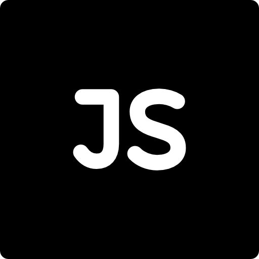
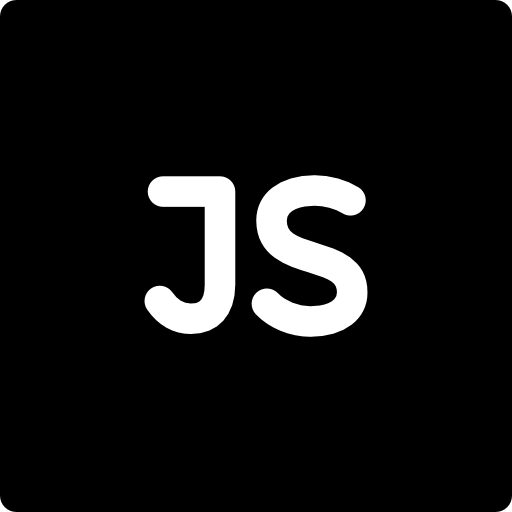

Меня зовут Антон, я студент ЯГТУ, мне 19 лет. Родился в Мурманске, переехал в Ярославль. В свободное время люблю играть в компьютерные игры, слушать музыку, играть на гитаре. Интересуюсь одеждой. Также в планах полностью освоить программу Figma
Образование:
Ярославский Государственный Технический Университет 09.03.02 - "Информационные системы и технологии"


 
